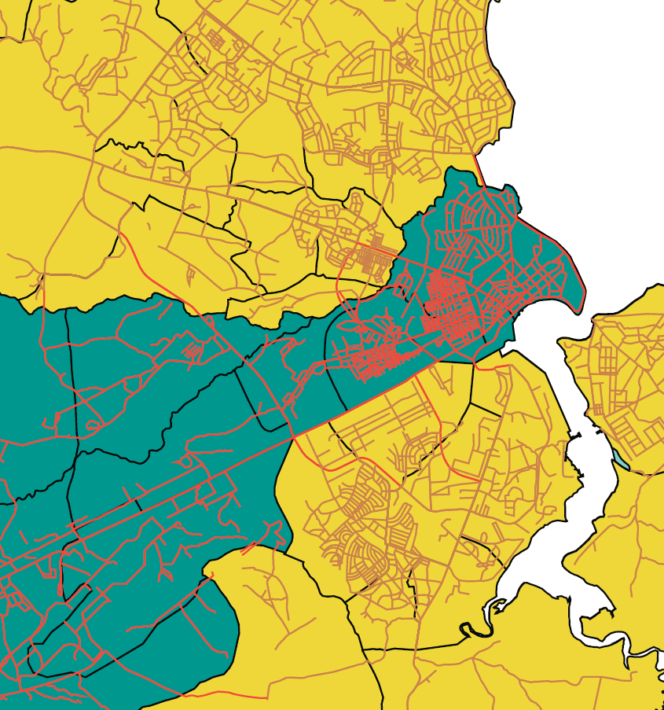
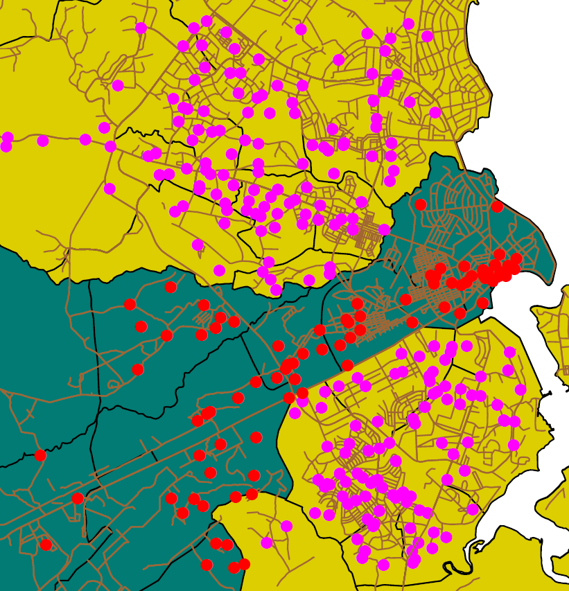

سامانههای اطلاعات جغرافیایی (GIS) فناوریهای نوینی هستند که امکان جمعآوری، ذخیره، تحلیل، و نمایش دادههای مکانی و جغرافیایی را فراهم میکنند. قدمت این فناوری به چند دهه قبل بازمیگردد و با پیشرفت در علوم کامپیوتر و دیتاهای ماهوارهای، نقش آن بیش از پیش پررنگ شده است. در حوزه کشاورزی، GIS به کشاورزان و مدیران منابع طبیعی کمک میکند تا اطلاعاتی دقیق درباره خاک، آب، پوشش گیاهی، و وضعیت محیطی مزارع به دست آورند و بر اساس این اطلاعات، تصمیمات بهینه برای کشت، آبیاری، و مدیریت منابع اتخاذ کنند. به عنوان مثال، نقشهبرداری دقیق از تنوع خاک و نواحی دچار تنشهای آبی، امکان برنامهریزی هدفمند و افزایش بهرهوری را فراهم میکند. استفاده از GIS در کشاورزی موجب کاهش ضایعات، صرفهجویی در مصرف کود و آب، و بهبود کیفیت محصولات میشود و به سمت کشاورزی هوشمند و پایدار حرکت میکند. در کنار سنجش از دور، GIS به عنوان ابزار مکمل و ضروری برای تحلیلهای محیطی و طراحی پروژههای کشاورزی دقیق شناخته شده است.
سامانه موقعیتیاب جهانی (GPS) نیز یکی از فناوریهای مهم در کنار GIS محسوب میشود. این سامانه بر پایه مجموعهای از ماهوارهها که در مدار زمین قرار دارند عمل میکند و امکان تعیین دقیق موقعیت جغرافیایی هر نقطه روی سطح زمین را فراهم میسازد.
در کشاورزی، GPS برای تعیین موقعیت دقیق مزارع، برداشت دادههای میدانی، هدایت ماشینآلات کشاورزی، و ثبت نقاط نمونهبرداری خاک یا گیاه استفاده میشود. ترکیب دادههای مکانی حاصل از GPS با قابلیتهای تحلیلی GIS، ابزار قدرتمندی برای مدیریت دقیق مزرعه و اجرای کشاورزی دقیق (Precision Agriculture) فراهم میکند.

